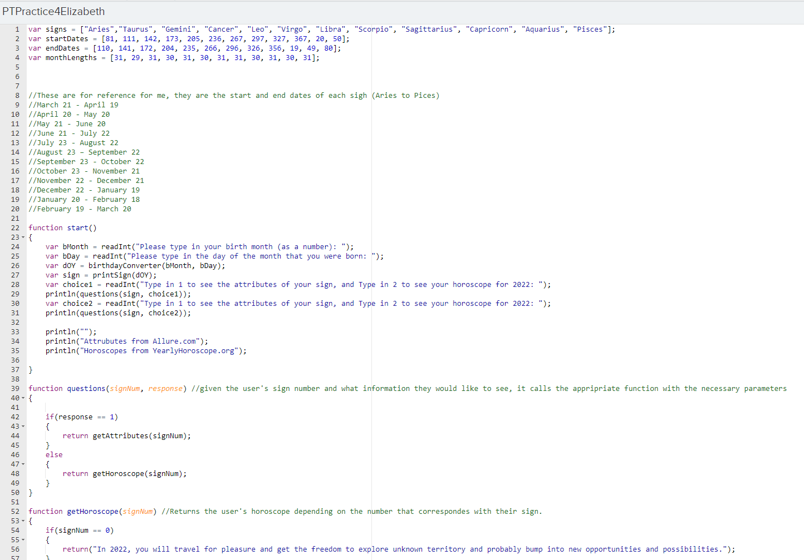

One project I have did this year was teaching a 70 minute class period (with a group) for my Honors English 5-6 class. Our class included group discussions, instruction time, and interactive activities about a literary theory called Cruel Optimism, as well as the book Their Eyes Were Watching God. I really enjoyed this project because creating an engaging lesson plan was a very fun and different challenge that really pushed me to better understand the concepts I was teaching. Here is the introductory slide for our presentation.
Another project I am proud of is my practice Create Performance Task I created for AP Computer Science Principles. For my project, I created a program that determines a user's zoidac sign and then gives them their horoscope and attributes accoridng to their sign. I'm proud of this project because although it took a lot of de-bugging and editing, it was very rewarding to come up with new ideas to make the project work, and to finally see it come together in the end. This is an image of a section of code I wrote for my program.